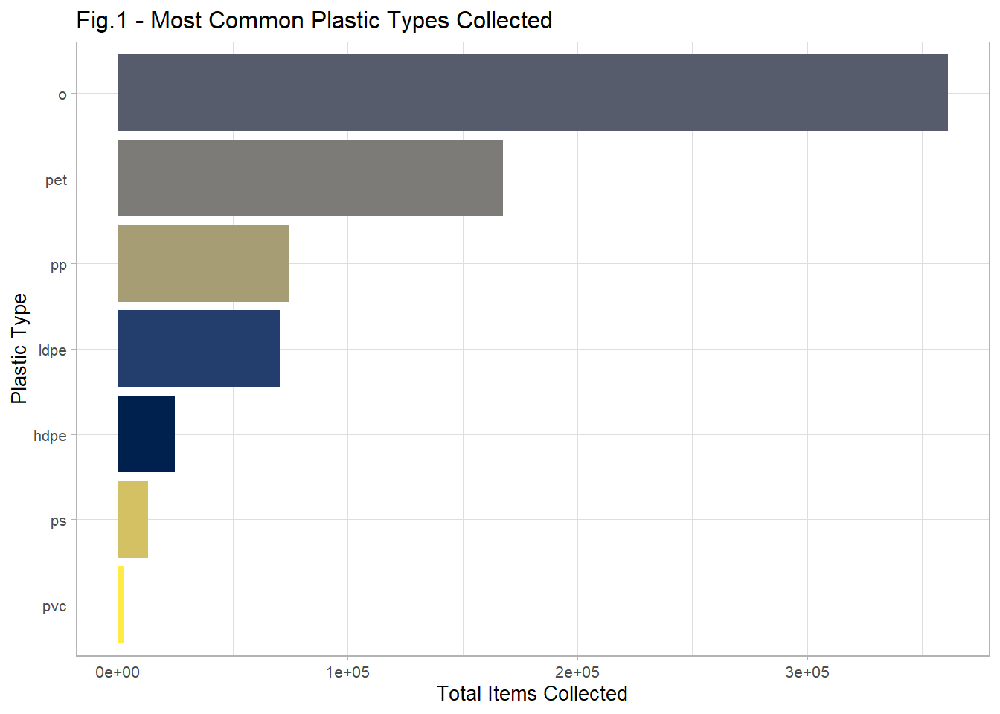
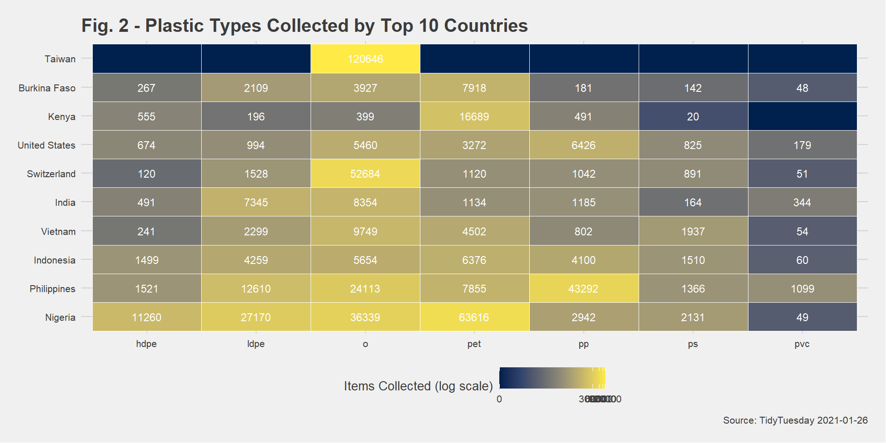
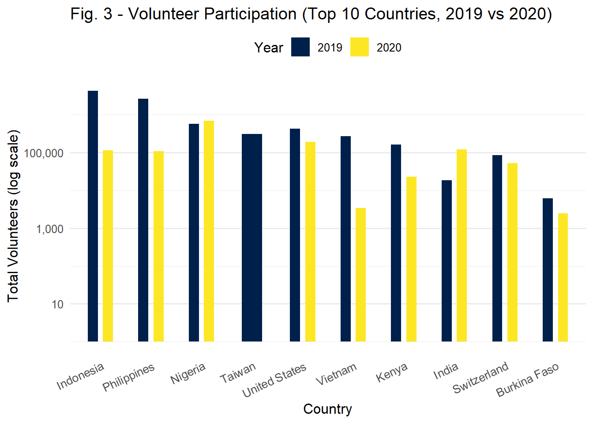
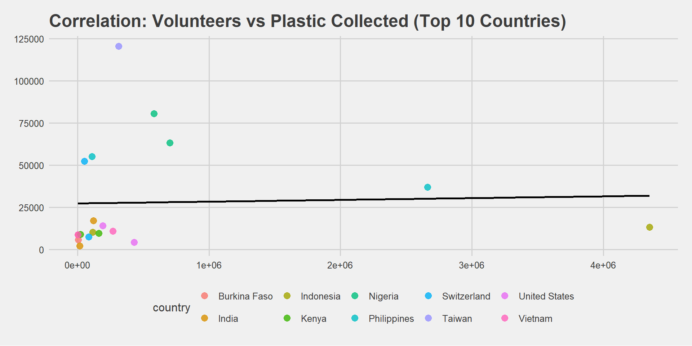

Ocean Plastics Pollution
Executive Summary
Sravan edit this please
This report explores global patterns in plastic pollution based on the 2021 TidyTuesday dataset contributed by Break Free From Plastic. The dataset includes detailed records of plastic items collected during beach cleanups across more than 50 countries, categorized by company (e.g., Coca-Cola, Nestlé), plastic type (e.g., PET, HDPE), and location. Our goal is to identify the top polluting companies globally and analyze variations in plastic waste across regions.
Introduction
Sravan edit this please
Plastic pollution is a pressing environmental issue, particularly in marine ecosystems where accumulated waste threatens wildlife and water quality. The dataset used in this report provides counts of branded and unbranded plastic items collected during cleanup events between 2019 and 2020. Each observation includes country, brand name (if known), type of plastic material, number of volunteers, and total waste collected. This project aims to explore which companies contribute most to this problem, and how their pollution footprint varies by country.
Methodology
Data Cleaning
- Standardized
parent_companynames:- Fixed capitalization and trimmed whitespace
- Grouped unclear labels (“Null”, “N/A”, “Assorted”) as
"Unbranded"
- Removed rows labeled
"Grand Total"(summary rows, not real observations) - Tidied
countrynames:- Fixed formatting (e.g.,
"Cote D Ivoire"→"Côte d'Ivoire")
- Fixed formatting (e.g.,
- Ensured all plastic count columns were numeric
- Replaced missing values with
0where appropriate
What’s in the cleaned_plastics dataset?
| Column | Description |
|---|---|
country |
Country where the cleanup took place |
year |
Year of data collection (2019 or 2020) |
parent_company |
Brand or company name (e.g., Coca-Cola, Nestle) |
empty |
Count of unidentifiable or label-less plastics |
hdpe |
Count of HDPE (High-Density Polyethylene) items |
ldpe |
Count of LDPE (Low-Density Polyethylene) items |
o |
Count of miscellaneous or other plastic types |
pet |
Count of PET (Polyethylene Terephthalate) items |
pp |
Count of PP (Polypropylene) items |
ps |
Count of PS (Polystyrene) items |
pvc |
Count of PVC (Polyvinyl Chloride) items |
grand_total |
Total plastic items collected (all types) |
num_events |
Number of cleanup events |
volunteers |
Number of participants involved in cleanups |
Key Findings
Most Common Plastic Types Collected
The above bar chat indicates which type of plastic were most commonly collected during cleanup events around the world and each bar represents a specific type of plastic, and the height of the bar shows the total number of items made from that material. The chat includes well known plastics like:
PET (Polyethylene Terephthalate): Commonly used in plastic drink bottles.
LDPE (Low-Density Polyethylene) : Often found in plastic bags and packing films.
PP (Polypropylene): Used in bottles caps, food containers and straws.
HDPE (High-Density Polyethylene) It is a strong, durable and widely used type of plastic made from petroleum.
PS (Polystyrene): Found in disposable cutlery and foam packing.
PVC (Polyvinyl Chloride): Less common, but used in pipes and some packing.
@ Sravan please condense the above and connect to next analysis
Top Contributing Companies to Plastic Waste
| Company | Total Plastics |
|---|---|
| Unbranded | 444880 |
| The Coca-Cola Company | 23823 |
| La Doo | 15221 |
| Nestle | 12622 |
| Unilever | 8401 |
| Universal Robina Corporation | 8107 |
| Pepsico | 7457 |
| Colgate-Palmolive | 6451 |
| Barna | 6225 |
| Pure Water, Inc. | 5347 |
Table 1 shows the top 10 companies responsible for the most plastic waste, based on the number of plastic items collected. While big companies do play a major role, a significant amount of plastic waste still comes from unknown and difficult to trace sources. Let’s dive deeper into the type of plastic waste generated and which country does so in large masses.
Min. 1st Qu. Median Mean 3rd Qu. Max.
0.0 184.8 1159.5 7518.2 5605.5 120646.0 Upon examination of Figure 1 and and cross checking the summary statistics, we can tell that the data is skewed, so applying a log() transformation helps normalize the distribution and improve visual interpretation.

Figure 2 shows the country-wise plastic waste patterns oncovered through collection drives, showing that global brands like Coca-Cola, Nestlé, and PepsiCo are major contributors across multiple countries—e.g., Coca-Cola in the Philippines, Nestlé in Indonesia, and PepsiCo in India and Mexico. These insights underscore the need for targeted corporate accountability and improved waste management strategies.ndefined and type of plastic collected during cleanup events.


Discussion
According to Table 1. Interestingly, the majority of the waste—over 400,000 items—was unbranded, hence couldn’t be traced back to a specific company. This highlights a major gap in accountability when it comes to plastic pollution. Among the branded companies, Coca-Cola had the highest count with 23,823 items, followed by La Doo, Nestlé, and Unilever.
Through keen observation in Fig. 2, the ‘o (other/unidentified plastics)’ category most countries is the most prevalent, indicating either a lack of thorough categorization or more intricate plastic waste. The patterns of collection differ significantly by nation, probably due to variables like regional consumption patterns, waste management strategies, and brand exposure. Plastic reduction policies and corporate accountability initiatives may focus on nations with greater numbers, such as Taiwan, Nigeria, and the Philippines.